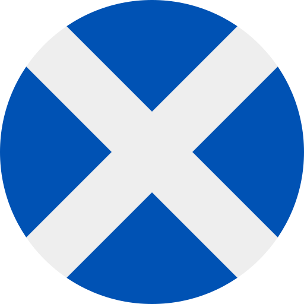
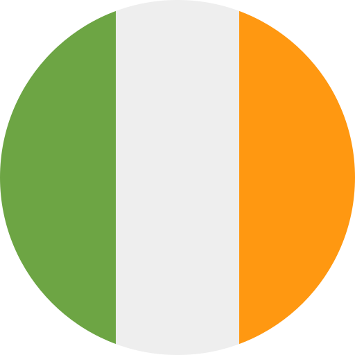
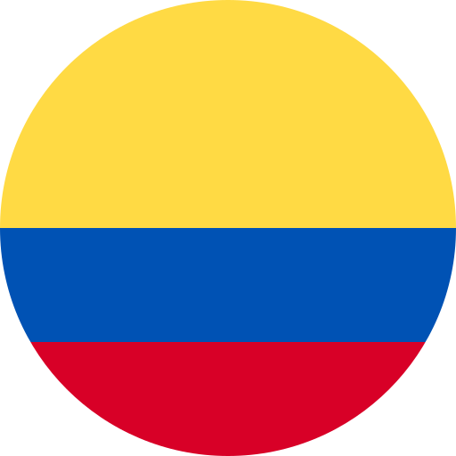

Ranking
Qualification ranking by recorded seed; this is not final tournament placement. Lowest time shown by default. Expand a player’s times to see every result in ascending order (lowest first). Times use M:SS.hh, assuming 60 fps; hover a time for its raw value.
| Seed | Player | Country | Best time | Status |
|---|---|---|---|---|
| 1 | M-J | 1:45.88 · 3 times
| ||
| 2 | Toni | 1:57.67 · 3 times
| ||
| 3 | Tolstoj | 2:00.33 · 4 times
| ||
| 4 | Francois |  | 2:00.72 · 3 times
| |
| 5 | DanV | 2:05.17 · 3 times
| ||
| 6 | Lokenze | 2:07.50 · 5 times
| ||
| 7 | Gunter | 2:20.92 | ||
| 8 | Roccoricci | 2:20.97 | ||
| 9 | Doble | 2:23.38 · 7 times
| ||
| 10 | Quatretiers | 2:23.85 · 7 times
| ||
| 11 | Phloxae | 2:24.58 · 5 times
| ||
| 12 | Tugi | 2:33.98 · 2 times
| ||
| 13 | AdamIrish |  | 2:36.45 · 6 times
| |
| 14 | Kanto | 2:47.78 | ||
| 15 | zulu | 2:48.37 · 3 times
| ||
| 16 | Trucy | 2:50.47 · 3 times
| ||
| 17 | Civel | 2:51.33 | ||
| 18 | Arin | 2:53.18 · 5 times
| ||
| 19 | RetroCabeza | 2:55.77 · 2 times
| ||
| 20 | Pancake | 3:00.33 · 3 times
| ||
| 21 | Purple | 3:03.07 · 5 times
| ||
| 22 | Jacob | 3:08.70 | ||
| 23 | RW6 |  | 4:00.88 | |
| 24 | Yann | 8:33.73 | ||
| — | AOD | 2:18.70 · 4 times
| Out of competition |
Bracket & results
Tournament bracket
Recorded winner: Toni
Bracket group 1
Round of 32
Completed Trucy0Civel4
Trucy0Civel4
Completed Doble4Yann0
Doble4Yann0
Completed
Francois4
Tolstoj1
Completed Pancake3
Pancake3
AdamIrish4
Completed Tugi4Purple1
Tugi4Purple1
Completedzulu4 Arin2
Arin2
CompletedQuatretiers4
RW60
CompletedKanto4RetroCabeza2
Completed Phloxae4
Phloxae4 Jacob1
Jacob1
Round of 16
Completed M-J4Civel1
M-J4Civel1
CompletedRoccoricci4Doble2
Completed
Francois4
AdamIrish0
CompletedDanV4Tugi0
Completedzulu1
Toni4
CompletedGunter1Quatretiers4
CompletedKanto1
Tolstoj4
CompletedLokenze3Phloxae4
Quarterfinals
CompletedM-J4Roccoricci0
CompletedDanV3
Francois4
CompletedQuatretiers1
Toni4
CompletedPhloxae1
Tolstoj4
Semifinals
Semi-FinalM-J4
Francois0
Semi-Final
Toni4
Tolstoj1
Final
CompletedM-J0
Toni2
Bracket group 2
Final
Not completed To be determined0To be determined0
To be determined0To be determined0
Bracket group 3
Final
Not completedTo be determined0To be determined0
Bracket group 4
Final
Not completedTo be determined0To be determined0
Bracket group 5
Final
Not completedTo be determined0To be determined0
Bracket group 6
Final
Not completedTo be determined0To be determined0
Bracket group 7
Final
Not completedTo be determined0To be determined0
Bracket group 8
Final
Not completedTo be determined0To be determined0
Bracket group 9
Final
Not completedTo be determined0To be determined0
Progression follows recorded winners. Empty feeder positions represent byes or unavailable earlier matches.